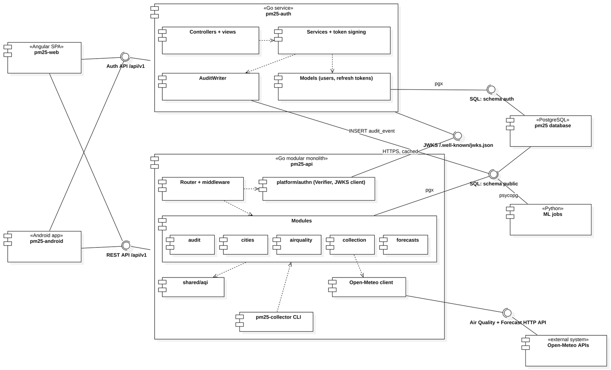

01 · oct. 2026 – en cours · Hanoï
PM2.5 Forecast, prévision de la pollution de l'air
Projet d'équipe, USTH
Site web, application Android et API REST qui affichent le taux de particules fines (PM2.5) à Hanoï et dans six capitales d'Asie du Sud-Est, avec une prévision à 24, 48 et 72 h.
Carte interactive, page par ville avec historique et conseils de santé. La prévision du modèle de l'équipe data science est comparée à celle de CAMS (Copernicus), qui prend le relais en cas de panne.
Conception terminée : architecture, schéma PostgreSQL, diagrammes UML, contrats OpenAPI, authentification JWT. Développement en cours (Go, Angular, Android).
OpenAPI · PostgreSQL · UML · JWT
